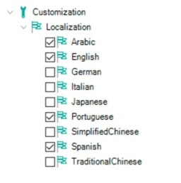
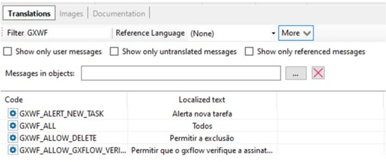

The GXflow backoffice web is translated to Arabic, English, Italian, Japanese, Portuguese, Simplified and Traditional Chinese, and Spanish.
If you want to use any of these languages, you must configure the Translation type property in your generation environment with the value Run-time and also enable in the Localization tree all the languages you need.

If you want to translate to another language or change some of our translation, you can open the object Language for the specific language you want and filter by the text GXWF and uncheck the filter “Show only user messages” to locate the required label.
If you want to translate to a new whole language, for example, French, you can save as the English language to initialize all the labels and then translate to French.

After you activate a new Language in your KB you need to do a Business Process Deploy to enable the new language in GXflow metadata.
| Backlinks |
| Toc:GeneXus BPM Suite |